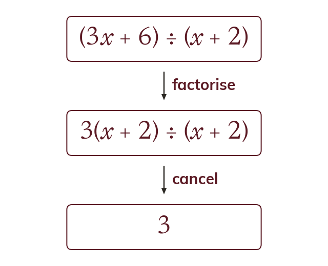
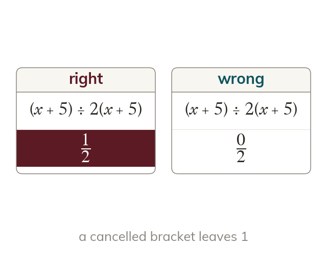
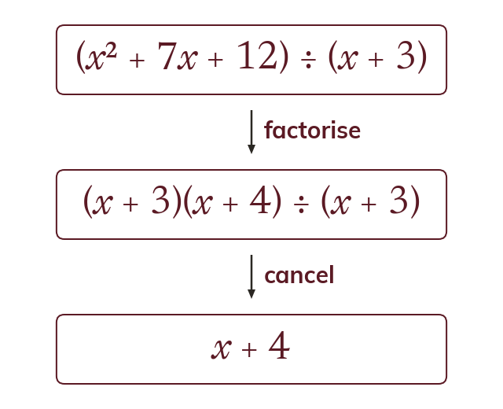
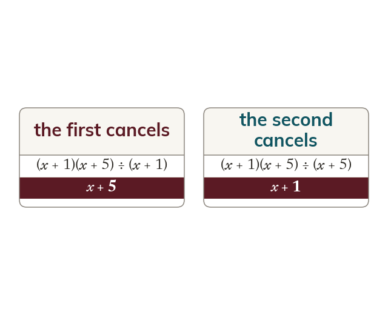

Factorise before you cancel
A sum cannot cancel until it is written as a product. Factorise the numerator or denominator first, then look for a shared bracket.
A sum can only cancel once it has been rewritten as a product, so factorising always comes before cancelling.
Work down the page at your own pace. Write every answer in your book first, then click to check it.
Read each card, then follow the worked examples one step at a time.

A sum cannot cancel until it is written as a product. Factorise the numerator or denominator first, then look for a shared bracket.

A bracket that appears top and bottom cancels completely. It leaves 1 in its place, not 0.
Pick an answer. If it's wrong, the feedback tells you which mistake it was.
Read each card, then follow the worked examples one step at a time.

A quadratic numerator or denominator factorises into two brackets before any cancelling is possible.

Either bracket of the quadratic may be the one that cancels.
Pick an answer. If it's wrong, the feedback tells you which mistake it was.
Finished? Next lesson: 9.13.1 Nets and Surface Area.
Log in, then search for a code to practise that skill.
Videos, worksheets and more on each part of this lesson.